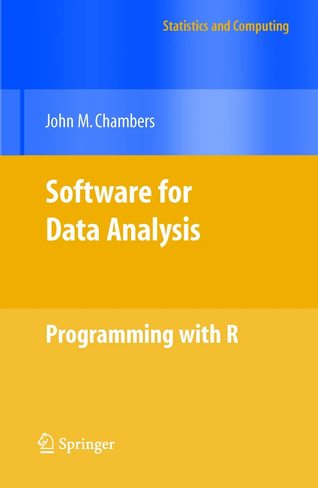
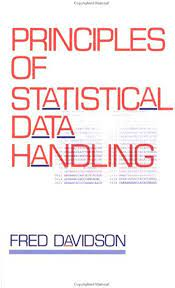
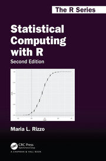
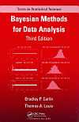

Fellow data scientists, do not be overwhelmed by vast multiplicities of numbers, for they are but symbols of the natural order. Embrace their uncertainty and seek to understand the patterns within it. I offer you some of the first R books I came across. I got started with R in 2011, and I decided to update it to focus on stats and ml books I’ve come across with an attempt to list my favorites with their lecture notes and video lectures where available.
- Software for data analysis: programming with R (Chambers 2008) by John Chambers is an essential guidebook for those who wish to learn how to use the R programming language for data analysis. Chambers is a renowned statistician, and he shares his expertise in the field of data analysis through this book. The book covers a wide range of topics related to data analysis, including
data structures,object-oriented programming,graphics, andstatistical modeling. It also offers a practical approach to understanding R programming, with an emphasis on building applications that can handle large datasets. Overall, this is a valuable resource for those who want to learn about R programming for data analysis. It is a comprehensive guide that covers all the essential aspects of data analysis and provides hands-on experience with R programming. The book is written in a clear and concise manner, making it easy to follow even for beginners.

- Principles of Statistical Data Handling (Davidson 1996) data scientist, strive to understand the principles of statistical data handling with clarity and precision. The book offers a guide to the foundations of this field, including
exploratory data analysis,hypothesis testing, andmodel building. Through careful attention and disciplined study, one can cultivate a deep understanding of the methods and techniques that underlie statistical data handling, and by following, we shall approach data with a rational and objective mindset, illuminating with our analytical skills the meaningful insights and so make more informed decisions.
A Stoic would say “Remember, the data is not what you see, but what you make of it. So, approach it with a clear mind, free frombiasand preconceptions, and seek the truth that lies hidden within.” By applying oneself to these principles with diligence and perseverance, we may yet unlock the full potential of statistical data handling, and make a valuable contribution to the world of data science.

- Probability & Statistics for Engineers and Scientists (Walpole et al. 2007), in this tome, a path to comprehension of probability and statistics is laid out before you. It is a journey of discovery that will require patience, diligence, and a willingness to learn. The author presents the tools and techniques needed to analyze data and draw meaningful conclusions. By using R, one can unlock the secrets hidden in the data. Fear not mistakes, for they are but stepping stones towards deeper understanding, only take care to learn from them, and use the knowledge gained to improve your understanding daily. With each chapter, you will gain a greater understanding of the complex and interconnected world of probability and statistics. Embrace the journey, and may the numbers guide you towards enlightenment.

- Introduction to Probability and Statistics Using R (Kerns 2018) recommended by my friend Adam Hyland. It covers the basic concepts of probability and statistics using the R programming language, It is a useful resource for data scientists who wish to gain a deeper understanding of probability and statistics and how to apply them. Starting with basic probability,
distributions,hypothesis testing,regression analysis, it then proceeds to more advanced topics such asBayesian statistics,machine learning, andtime series analysis. Each chapter presents clear explanations, examples, and R code to help the reader grasp the theoretical concepts and apply them in practice. By including a wide range of real-world examples and datasets, it helps the readers conect the concepts and techniques with thier application to real data. for a free copy

- Statistical Computing with R (Rizzo 2019) is a comprehensive guide to the analysis and manipulation of data using R. Within, we are introduced to a wide variety of statistical concepts and tools that enable us to explore and understand complex datasets.
Standard statistical techniques used in data analysis, such asprobability,hypothesis testingare covered. We learn about thenormal distributionand its importance in statistical analysis, as well as thePoisson distribution, which is used to model counts of events.
The book introduces us to the use ofstatistical transformations, such as the log transformation, which is often used to make skewed data more normal. We also learn aboutdensity estimationand the use of histograms and kernel density estimates to visualize data.
The concepts ofsamplingandrandom variablesare explored, as well as the calculation ofsample meansandstandard errors. We also learn about the use of random samples fromMonte Carlo simulationto approximate probabilities and calculate statistics.
The book covers the use of algorithms and samplers, such as theMetropolis-Hastingsalgorithm, to explore parameter space and to generate samples from distributions of interest. We learn about the importance of convergence and the use of proposals in Monte Carlo sampling.
The concepts ofbiasandvarianceare explored, as well as the calculation ofconfidence intervalsand the use ofhypothesis testingto evaluatestatistical significance. We also learn about the use of thebootstrapandjackknifemethods to find the level of uncertainty in our estimates.
Throughout the book, we are introduced to the use of R for statistical computing. We learn about the use of formulas to specify statistical models, as well as the use of packages for data manipulation and visualization.
Overall, “Statistical Computing with R” is an essential resource for anyone interested in using statistical methods to analyze data. It provides a lucid and comprehensive treatment of statistical concepts and their practical implementation using R.

- Bayesian methods of Data Analysis (Carlin and Louis 2008) we are presented with a framework that is grounded in the philosophy of probability theory. We learn to seek a baseline model then approach the problem at hand with a Bayesian perspective.
Through the use ofBayesian models, we can compute theconditional distributionsof our data and evaluate the error and loss functions. We must consider convergence, thechoice of priors, and how they are specified. We useBayes' ruleto compute theposterior distributionandmarginal likelihood, and we obtainpoint estimatesandcredible intervals.
The use of theGibbs samplerand theMetropolis-Hastingsalgorithm inMCMCmethods are presented as tools to obtain a sample from the posterior distribution. We useWinBUGScode andMonte Carlosimulations to produce results that are in line with the data observed.
We are introduced to the concept of theBayes factor, and how it is used to compare models. We also understand how the use of theJeffreys prior, thehyperprior, and theconjugate priorcan be used to simplify our computations.
In Bayesian methods, we use the full conditional distributions to obtain the joint posterior distribution of our parameters. We also compute the marginal posterior distribution, which can be used to obtain a credible interval.
We are shown how to deal with univariate and multivariate data, and how to model therandom effectsandcovariate effects. We also understand how to evaluate the performance of our models throughhistograms,percentiles, andplots.
In this work, we are presented with a practical and useful guide to Bayesian methods that can be applied to a variety of problems.

- Information Theory, Inference and Learning Algorithms (MacKay 2003) by David J.C. MacKay FRS

References
Carlin, B. P., and T. A. Louis. 2008. Bayesian Methods for Data Analysis. Chapman & Hall/CRC Texts in Statistical Science. CRC Press. https://books.google.co.il/books?id=GTJUt8fcFx8C.
Chambers, John M. 2008. Software for Data Analysis Programming with r. New York; London: Springer. http://www.amazon.de/Software-Data-Analysis-Programming-Statistics/dp/0387759352.
Davidson, Fred. 1996. Principles of Statistical Data Handling. https://doi.org/10.4135/9781483348902.
Kerns, G. Jay. 2018. Introduction to Probability and Statistics Using r.
MacKay, David J. C. 2003. Information Theory, Inference, and Learning Algorithms. Copyright Cambridge University Press.
Rizzo, Maria L. 2019. Statistical Computing with r Maria l. Rizzo. Second edition. Chapman & Hall/CRC the r Series. Boca Raton: CRC Press, Taylor & Francis Group.
Walpole, Ronald E., Raymond H. Myers, Sharon L. Myers, and Keying Ye. 2007. Probability & Statistics for Engineers and Scientists. 8th ed. Upper Saddle River: Pearson Education.